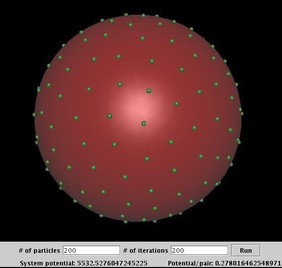

Here is an example of using MC simulation to solve the N-Body problem on a sphere. It uses Metropolis MC method to minimize the system potential and thus find near-equilibrium configuration of the particles. See the paper "MONTE-CARLO AND POLYHEDRON-BASED SIMULATIONS I: EXTREMAL STATES OF THE LOGRITHMIC N-BODY PROBLEM ON A SPHERE" by Lim, Nebus, and Assad for details (http://www.rpi.edu/~limc).
The java code (MonteCarloSphere.java , NBodyApplet.java) can be run as an application or an applet. Click the picture below to run the applet. We can see initial randomly distributed paritcles are distributed into well spaced positions via the Monte Carlo simulation. If connecting those particles, we can get a well-shaped surface mesh.
Please note: Java3D is needed in order to run this applet. And of course you need the Java plugin for your browser.
.
Consider geometries to be meshed as energy systems, by using the same idea, we can generate meshes using MC simulation.